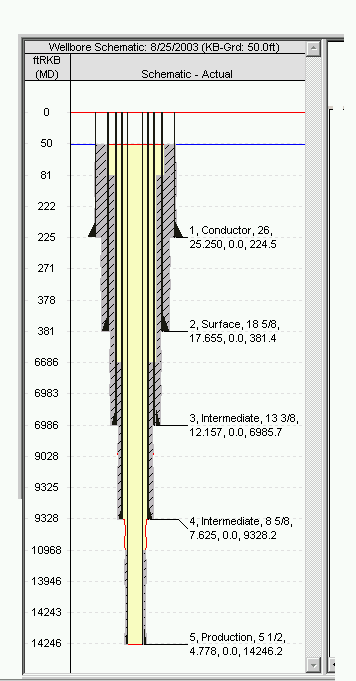
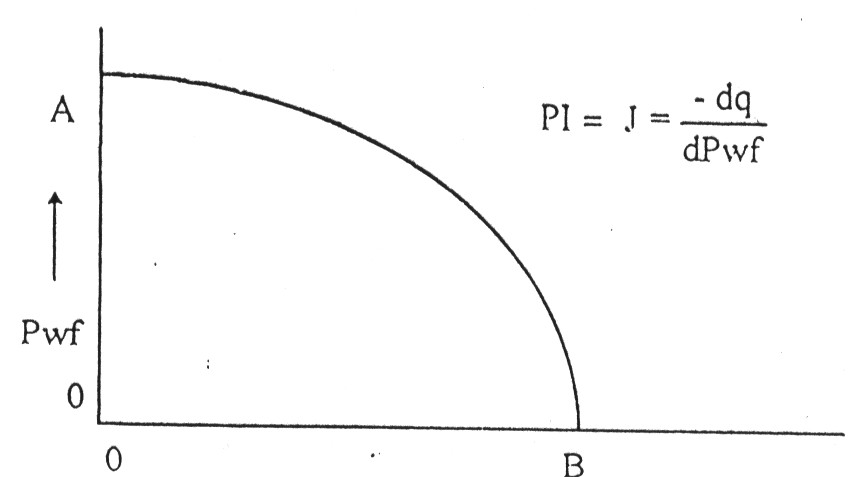
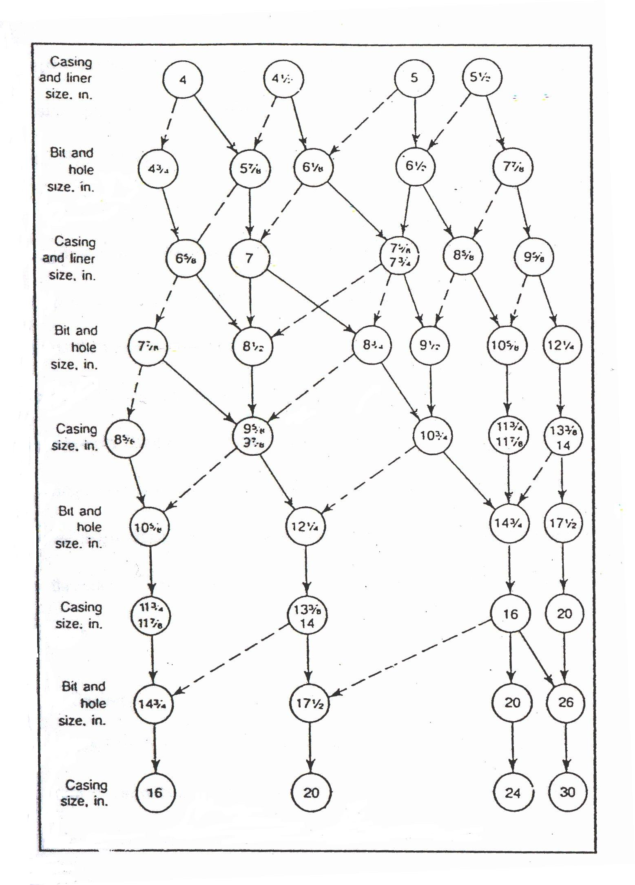
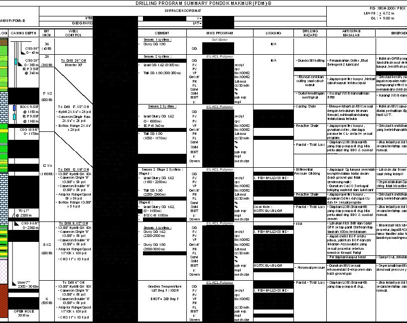

Materi Minggu Ini
- Konstruksi sumur dan filosofi program casing
- Penentuan ukuran tubing dan casing per section
- Dasar-dasar hidrolika pemboran
- Menyusun drilling program yang siap dipakai di lapangan
Penjelasan Materi
Konstruksi Sumur & Program Casing
Konstruksi sumur adalah penampang yang memperlihatkan program casing, penyemenan, dan komplesi sumur, direncanakan seakurat mungkin dengan mempertimbangkan geologi bawah permukaan, material konstruksi, efisiensi peralatan, serta rencana pemboran dan produksi selanjutnya. Program casing menjadi tahap awal perencanaan, diikuti program penyemenan, hingga sumur siap memproduksikan fluida hidrokarbon ke permukaan.
Langkah penentuan konstruksi sumur secara umum:
- Tentukan ukuran dan jumlah tubing.
- Tentukan ukuran casing produksi.
- Tentukan setting depth casing produksi.
- Tentukan ukuran casing intermediate, surface, dan conductor.
- Tentukan setting depth casing intermediate, surface, dan conductor.
- Rencanakan completion sumur.
Penentuan Ukuran Tubing
Ukuran tubing optimum dipilih agar memberikan laju produksi optimum atau laju maksimum yang masih dalam batas kemampuan formasi. Dasarnya adalah productivity index yang dinyatakan secara grafis melalui kurva IPR (Inflow Performance Relationship), dikombinasikan dengan estimasi penurunan tekanan sepanjang tubing yang bergantung pada diameter tubing dan sifat fluida formasi. Konsep Maximum Efficiency Rate (MER) — laju produksi maksimal tanpa merusak reservoir — turut menjadi acuan.
Jenis-Jenis Casing
- Conductor casing — pipa pendek (90–150 ft), diameter 16″–30″, untuk tanah lembek/rawa/lepas pantai, melindungi struktur tanah di dasar rig.
- Surface casing — dipasang cukup dalam untuk mencegah runtuhnya dinding lubang pada formasi tak kompak dekat permukaan; titik mula bagi casing head.
- Intermediate casing — melindungi lubang bor pada formasi lemah yang berisiko rusak oleh lumpur berdensitas tinggi pada sumur dalam.
- Production casing — tujuan utama pemboran, mengisolasi fluida yang tidak dikehendaki dari formasi produktif.
Contoh Struktur Dokumen Drilling Program
Sebuah drilling program lapangan umumnya memuat: pendahuluan (tujuan pemboran, data geologi, perkiraan stratigrafi), program kerja pemboran (data sumur, tata waktu, penampang sumur, prosedur per trayek lubang), daftar lampiran (drilling time, offset well data, mud cost estimation, casing design summary, prosedur running casing, well control program, dsb.), executive summary (ringkasan operasi per trayek lubang), data hidrolika dan sifat lumpur, hingga ketentuan umum program — termasuk tanggung jawab Drilling Supervisor, prosedur pelaporan harian, dan protokol keselamatan seperti BOP test berkala, drill off test, dan slow pump rate test.
Gambar & Ilustrasi
Diambil langsung dari slide PPT Chapter 4.



